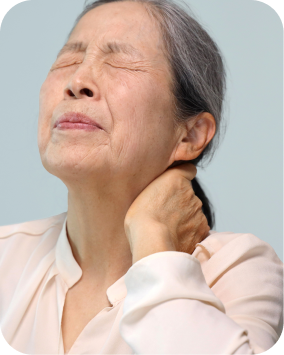
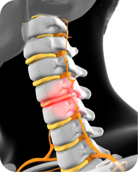
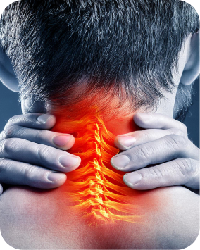
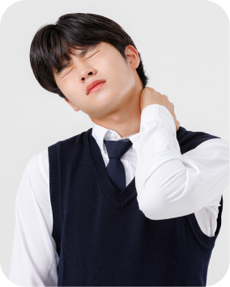

퇴행성 변화
나이가 들면서 디스크와 관절이 변형되어 척추관이 좁아질 수 있습니다.디스크·관절 변화로 좁아지는 척추관
목의 척추관이 좁아지면서 신경이나 척수가 압박되어
목 통증뿐 아니라 손의 감각과 움직임에도 영향을 줄 수 있습니다.
나이가 들면서 뼈와 디스크, 인대가 변형되면 척수가 지나가는 공간이 점차 좁아질 수 있습니다.
손 저림이나 움직임의 변화가 반복된다면 경추와 신경 상태를 확인해 보세요.

나이가 들면서 디스크와 관절이 변형되어 척추관이 좁아질 수 있습니다.디스크·관절 변화로 좁아지는 척추관

디스크가 밀려나오면서 신경이나 척수를 압박할 수 있습니다.돌출된 디스크에 의한 신경·척수 압박

척추 구조의 변화가 공간을 좁히고 압박을 만들 수 있습니다.구조 변화에 따른 척추관 협소·압박

태어날 때부터 좁은 경우에는 작은 변화에도 증상이 나타날 수 있습니다.좁은 척추관은 작은 변화에도 증상 가능
경추 척추관협착증은 목과 팔의 통증을 넘어 손의 세밀한 움직임과 보행에도 영향을 줄 수 있습니다.
통증이 경미한 초기에는 약물치료와 물리치료로 증상을 완화하며 경과를 살필 수 있습니다.
손의 힘이 약해지거나 보행 장애가 나타난다면 신경 압박 정도를 빠르게 확인해야 합니다.

진통·소염제 등을 활용해 목과 어깨의 통증과 염증을 완화합니다.
긴장된 근육을 이완하고 목의 움직임과 기능을 회복하도록 돕습니다.


통증 유발점이나 신경 주변에 약물을 적용해 통증 완화를 돕습니다.
신경이나 척수의 압박이 동반되면 손의 저림, 손놀림의 둔화 또는 보행 불안정이 나타날 수 있습니다. 목이 많이 아프지 않아도 평가가 필요할 수 있습니다.
척수 압박에서 나타날 수 있는 증상이지만 다른 원인도 가능합니다. 단추 잠그기 같은 동작이 어려워지거나 균형이 나빠지면 진료를 서두르세요.
좁아진 정도뿐 아니라 척수 압박과 신경 기능, 증상의 진행 여부를 함께 확인합니다. 단순 통증과 척수 기능 저하가 있는 경우의 치료 계획은 다를 수 있습니다.